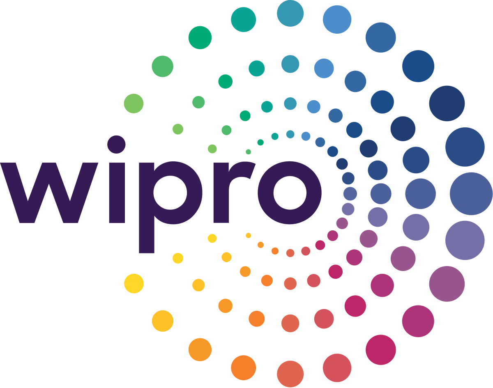

My whole experience so far

Wipro Limited
Sr Software Developer Engineer in Test
from 03/2021 to 12/2021
Wipro Limited Sr Software Developer Engineer in Test
from 03/2021 to 12/2021- Description
- Outsourced to a multinational company from California, I worked with a Sr Software Developer Engineer in Test team responsible to guarantee the quality of a system for printer ink subscription by developing and maintaining automated tests during its continuous delivery following agile methodologies, half Scrum and half Kanban.
- Achievments
-
- Developed and maintained 40+ automated test cases with Capybara framework, using Page Object design pattern, with Ruby language;
- Kept updated 80+ test cases at Test Rails;
- Reviewed many pull requests on Github.
- Used Postman to access and test REST API;
- Used SQL database to store data from the automated test cases;
- Monitored and kept test suites on JENKINS, weekly regression tests suites and daily smoke tests suites to report the result of the tests for all stakeholders and also fixing bugs that could appear during the execution on Jenkins;
- Reported weekly the results of Jenkins on Test Rails.
- Worked with development team to open, monitoring and support it on defects at JIRA;
- Participated from different meetings as growmings, plannings, retrospective and tech meetings;
- Shared, in tech meetings, tips to help my coworkers during their tasks;
- Mentored new employes from Wipro;
- Participated during technical interviews for new employes;
- Responsible 3 times to share the main achieves from my team in meetings with all stakeholders.
OSF Digital
Pl Software Developer Engineer in Test
from 01/2020 to 02/2021
OSF Digital Pl Software Developer Engineer in Test
from 01/2020 to 02/2021- Description
- Outsourced for one of the biggest insurance companies from Brazil and also temporarily for a big investment company also from Brazil. For the first company, I worked on a web system for insurance of electronic devices such as cameras and phones and then I worked on a system with web and mobile systems for health insurance. For the second one, I worked on a web system responsible for managing client investments.
- Achievments
-
- Developed and maintained 30+ automated test cases with Protractor framework, using Page Object design pattern, with JavaScript language;
- Developed and maintained 20+ automated test cases with Appium framework, using Page Object design pattern, with Java language;
- Created 100+ test cases based in software specifications and acceptance criterias specifications;
- Used Postman or Insomnia to access and test REST API;
- Used SQL and Postgres during the execution of the tests;
- Created a method, using mind maps, to map all the system and easily identify important manual regression test that I used to run always before a delivery date to guarantee the quality of the product in production;
- Used planning poker to estimate sprints activities;
- Tracked defects on JIRA.
- Performed different types of tests as functional, non-functional, regression, integration and automation tests to guarantee the quality of each functionality;
- Used user experience bases to suggest improvements for every project.
University of Fortaleza
Pl Software Developer Engineer in Test
from 10/2015 to 04/2019
University of Fortaleza Pl Software Developer Engineer in Test
from 10/2015 to 04/2019- Description
- Worked in 6+ projects, but mainly in the main product of the university, Unifor Mobile and Unifor Online, the applications responsible to connect students with the university, giving them access to their tests, materials, due dates, teachers contents and communications and also to other products.
- Achievments
-
- Implemented automated tests for Android and IOS mainly application of the university;
- Developed and maintained 100+ automated test cases with Selenium and Appium framework, using Page Object design pattern, with Java language;
- Created and maintained 6+ test plans, with test suites, test cases and specific data to each test case using RQM from IBM;
- Participated in projects with Agile Methodology but also projects with Cascade methodology;
- Used Postman to access and test REST API;
- Used SQL database to create data for tests and also during the execution of the tests;
- Helped to monitoring a Jmeter script to test the performance of the system to handling with 2k+ students at the same time;
- Tracked defects in ALM from IBM;
- Performed different types of tests as functional, non-functional, regression, integration and automation tests to guarantee the quality of each functionality;
- Used user experience bases to suggest improvements for every project;
- Mentored new employes;
- Intership from 10/2015 to
-
I started my career in one of the biggest universities of Brazil as Intern, participated in front end projects,
android development projects and started my career as QA.
- Maintained an already existing front end project using Ruby on Rails framework, JQuery, HTML and CSS;
- Developed an Android Application with Java Android with accessibility principles for users who are blind, using Android Annotations, Retrofit, Event Bus, MVP and agile methodologies;
- Started my career as QA being responsible to guarantee the quality of new applications for mobile and web platforms.